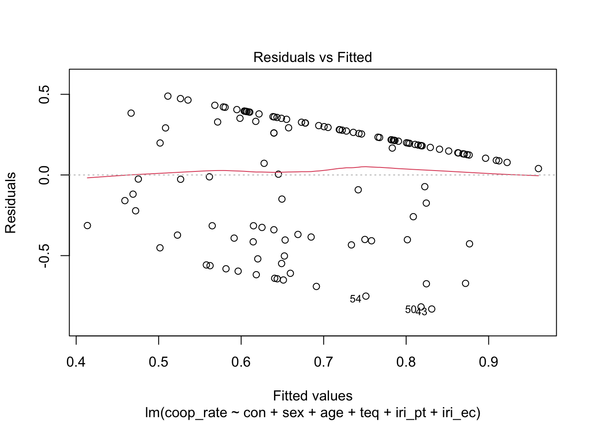

This dataset is from a study conducted by 120 undergraduate students.
# load in datalibrary(tidyverse)
── Attaching core tidyverse packages ──────────────────────── tidyverse 2.0.0 ──
✔ dplyr 1.1.4 ✔ readr 2.1.5
✔ forcats 1.0.0 ✔ stringr 1.5.1
✔ ggplot2 3.5.2 ✔ tibble 3.3.0
✔ lubridate 1.9.4 ✔ tidyr 1.3.1
✔ purrr 1.0.4
── Conflicts ────────────────────────────────────────── tidyverse_conflicts() ──
✖ dplyr::filter() masks stats::filter()
✖ dplyr::lag() masks stats::lag()
ℹ Use the conflicted package (<http://conflicted.r-lib.org/>) to force all conflicts to become errors
pd <-read_csv("pd_data.csv")
Rows: 120 Columns: 17
── Column specification ────────────────────────────────────────────────────────
Delimiter: ","
chr (6): con, scen, sex, ethnic, alex, describe
dbl (11): pid, age, words, first.choice, coop, delay, teq, iri_pt, iri_fs, i...
ℹ Use `spec()` to retrieve the full column specification for this data.
ℹ Specify the column types or set `show_col_types = FALSE` to quiet this message.
head(pd)
# A tibble: 6 × 17
pid con scen sex age ethnic alex words describe first.choice coop
<dbl> <chr> <chr> <chr> <dbl> <chr> <chr> <dbl> <chr> <dbl> <dbl>
1 7019 imag sub F 19 South A… F NA Alex an… 1 19
2 7026 imag sub F 18 East As… F NA It is a… 1 20
3 7031 imag sub F 23 East As… F NA I would… 1 20
4 7052 imag res F 18 South A… F NA I'd ass… 1 20
5 7053 imag res F 18 European F NA It's Fr… 0 7
6 7058 imag res F 18 East As… F NA I imagi… 1 20
# ℹ 6 more variables: delay <dbl>, teq <dbl>, iri_pt <dbl>, iri_fs <dbl>,
# iri_ec <dbl>, iri_pd <dbl>
This code will help us understand how many people cooperated versus defected in each experimental condition. “Does the experimental condition (‘imagine’ vs ‘control’) affect the likelihood of cooperating?” The participants played a total of
# calculated the proportion of cooperationpd <- pd |>mutate(coop_rate = coop /20)pd
# A tibble: 120 × 18
pid con scen sex age ethnic alex words describe first.choice coop
<dbl> <chr> <chr> <chr> <dbl> <chr> <chr> <dbl> <chr> <dbl> <dbl>
1 7019 imag sub F 19 South … F NA Alex an… 1 19
2 7026 imag sub F 18 East A… F NA It is a… 1 20
3 7031 imag sub F 23 East A… F NA I would… 1 20
4 7052 imag res F 18 South … F NA I'd ass… 1 20
5 7053 imag res F 18 Europe… F NA It's Fr… 0 7
6 7058 imag res F 18 East A… F NA I imagi… 1 20
7 7064 imag res F 20 Europe… F NA Saturda… 1 20
8 7069 imag res F 19 East A… F NA Alex is… 1 20
9 7075 imag res F 18 East A… F NA Like sh… 1 20
10 7081 imag res F 19 East A… F NA Saturda… 0 0
# ℹ 110 more rows
# ℹ 7 more variables: delay <dbl>, teq <dbl>, iri_pt <dbl>, iri_fs <dbl>,
# iri_ec <dbl>, iri_pd <dbl>, coop_rate <dbl>
Here we will summarize the average cooperation by condition
# Calculate mean, standard deviation, and count for each grouppd %>%group_by(con) %>%summarise(mean_rate =mean(coop_rate, na.rm =TRUE),sd_rate =sd(coop_rate, na.rm =TRUE),n =n() )
# A tibble: 2 × 4
con mean_rate sd_rate n
<chr> <dbl> <dbl> <int>
1 imag 0.784 0.365 60
2 word 0.599 0.390 60
Visualizing cooperation rate by condition
pd %>%ggplot(aes(x = con, y = coop_rate, fill = con)) +geom_boxplot() +stat_summary(fun = mean, geom ="point", shape =23, size =3, fill ="yellow") +labs(title ="Cooperation Rates by Condition",x ="Condition",y ="Proportion of Rounds Cooperated" ) +theme_minimal()
Here we can clearly see that participants were more likely to cooperate when they were told a story about helping a partner or teammate rather than looking at random words and then going through the simulation
# Compare mean cooperation rates statisticallyt.test(coop_rate ~ con, data = pd)
Welch Two Sample t-test
data: coop_rate by con
t = 2.6811, df = 117.47, p-value = 0.008394
alternative hypothesis: true difference in means between group imag and group word is not equal to 0
95 percent confidence interval:
0.04835089 0.32164911
sample estimates:
mean in group imag mean in group word
0.7841667 0.5991667
This allows us to Check if the difference in average cooperation the imagine and control are statistically significant. Since we are looking at a 95% confidence interval and the p-value is 0.008394 (less than 0.05) our test is statistically significant. This is evidence that both of our groups differ (imagine and control).
This next test is a logistic regression of the first round, testing for demographics and empathy scores. Test whether participants in the “imagine” group were more likely to cooperate on the very first round, controlling for demographics and empathy scores.
# Logistic regression: does imagining affect first round choice?model <-glm(first.choice ~ con + sex + age + teq + iri_pt + iri_ec,data = pd, family = binomial)summary(model)
Call:
glm(formula = first.choice ~ con + sex + age + teq + iri_pt +
iri_ec, family = binomial, data = pd)
Deviance Residuals:
Min 1Q Median 3Q Max
-1.9245 -1.1784 0.5951 0.9141 1.3332
Coefficients:
Estimate Std. Error z value Pr(>|z|)
(Intercept) -1.840919 2.465491 -0.747 0.4553
conword -0.981038 0.437910 -2.240 0.0251 *
sexM 0.082029 0.431811 0.190 0.8493
age 0.064155 0.119117 0.539 0.5902
teq 0.053945 0.038165 1.413 0.1575
iri_pt -0.002479 0.055638 -0.045 0.9645
iri_ec -0.016773 0.073035 -0.230 0.8184
---
Signif. codes: 0 '***' 0.001 '**' 0.01 '*' 0.05 '.' 0.1 ' ' 1
(Dispersion parameter for binomial family taken to be 1)
Null deviance: 146.61 on 119 degrees of freedom
Residual deviance: 135.68 on 113 degrees of freedom
AIC: 149.68
Number of Fisher Scoring iterations: 4
The only statistically significant variable here for whether the participants decide to cooperate or defect on the first round is “conword” (or the condition word). Participants are less likely to cooperate on the first round when given words before they are prompted to make their decisions.
Econometric Approach
We will run a linear regression to checks if the treatment increases total cooperation across all rounds and adjusts for demographics and empathy
model2 <-lm(coop_rate ~ con + sex + age + teq + iri_pt + iri_ec, data = pd)summary(model2)
Call:
lm(formula = coop_rate ~ con + sex + age + teq + iri_pt + iri_ec,
data = pd)
Residuals:
Min 1Q Median 3Q Max
-0.8310 -0.3470 0.1540 0.2919 0.4888
Coefficients:
Estimate Std. Error t value Pr(>|t|)
(Intercept) 0.353785 0.336225 1.052 0.2949
conword -0.184379 0.071182 -2.590 0.0109 *
sexM 0.009746 0.071138 0.137 0.8913
age 0.003405 0.015147 0.225 0.8225
teq 0.011439 0.006430 1.779 0.0779 .
iri_pt 0.006034 0.009080 0.665 0.5077
iri_ec -0.013575 0.012613 -1.076 0.2841
---
Signif. codes: 0 '***' 0.001 '**' 0.01 '*' 0.05 '.' 0.1 ' ' 1
Residual standard error: 0.3775 on 113 degrees of freedom
Multiple R-squared: 0.09954, Adjusted R-squared: 0.05172
F-statistic: 2.082 on 6 and 113 DF, p-value: 0.06077
This model predicts a participant’s proportion of cooperative choices (0–1) based on:
con: treatment (imag = reference, word = dummy conword)
sex: gender (F = reference, M = dummy)
age: participant’s age
teq, iri_pt, iri_ec: empathy-related scores
Participants who imagined helping their partner cooperated significantly more (M = 78%) than those in the control group (M = 60%). The treatment group’s cooperation rate was on average 18 percentage points higher, even after controlling for gender, age, and empathy scores. None of these other variables significantly predicted cooperation.
Next we will check for heteroskedasticity to make sure our p-values are valid and not too optimistic.
# Plot residuals vs fitted valuesplot(model2, which =1)

This graph shows us that heteroskedasticity is not present.
We will now examine the round-level data to see how participants changed their behavior across rounds.
Checking for multicollinearity…
library(car)
Loading required package: carData
Attaching package: 'car'
The following object is masked from 'package:dplyr':
recode
The following object is masked from 'package:purrr':
some
vif(model2)
con sex age teq iri_pt iri_ec
1.066763 1.065441 1.068082 3.305221 1.348709 3.424700
Predictor
VIF
Interpretation
con
1.07
No multicollinearity (ideal).
sex
1.07
No multicollinearity.
age
1.07
No multicollinearity.
teq
3.31
Moderate correlation with others, but not problematic.
iri_pt
1.35
No multicollinearity.
iri_ec
3.42
Moderate correlation with others, but still acceptable.
Alex Data
The simulation we are using does not provide data for the partner “Alex”. We have to write code to understand what to feed the LLM.
library(tidyverse)# One set of Alex's decisions (Random 50/50)set.seed(123) # For reproducibilityalex_choices <-tibble(round =1:20,alex_choice =sample(c(0, 1), 20, replace =TRUE, prob =c(0.5, 0.5)))
LLM Data Analysis
library(tidyverse)# Load your new PD datallm_pd <-read_csv("SURP LLM Responses PD.csv") |>mutate(coop_rate = coop /20) # Make sure coop_rate is calculated if needed
Rows: 18 Columns: 11
── Column specification ────────────────────────────────────────────────────────
Delimiter: ","
chr (2): con, character
dbl (9): pid, first.choice, coop, delay, teq, iri_pt, iri_fs, iri_ec, iri_pd
ℹ Use `spec()` to retrieve the full column specification for this data.
ℹ Specify the column types or set `show_col_types = FALSE` to quiet this message.
# A tibble: 4 × 5
con mean_rate sd_rate n dataset
<chr> <dbl> <dbl> <int> <chr>
1 imag 0.784 0.365 60 Original
2 word 0.599 0.390 60 Original
3 imag 0.411 0.326 9 LLM
4 word 0.367 0.0935 9 LLM
# visualized comparisonlibrary(ggplot2)ggplot(comparison_summary, aes(x = con, y = mean_rate, fill = dataset)) +geom_bar(stat ="identity", position =position_dodge()) +labs(title ="Cooperation Rates: Original vs LLM PD",x ="Condition",y ="Mean Cooperation Rate") +theme_minimal()
Here we compare our human data to our LLMs data. We can see here that for the LLMs that have a much lower average cooperation rate. With the mean rate for the image condition differing by ~.34 with a similar standard deviation. Additionally, we have a difference in the mean rate for the word condition differing by ~.23 and a much smaller standard deviation of ~.1 compared to .39. Are LLMs less likely to cooperate because they lack human empathy and emotions?
t.test(coop_rate ~ con, data = pd) # Original
Welch Two Sample t-test
data: coop_rate by con
t = 2.6811, df = 117.47, p-value = 0.008394
alternative hypothesis: true difference in means between group imag and group word is not equal to 0
95 percent confidence interval:
0.04835089 0.32164911
sample estimates:
mean in group imag mean in group word
0.7841667 0.5991667
t.test(coop_rate ~ con, data = llm_pd) # LLM
Welch Two Sample t-test
data: coop_rate by con
t = 0.39342, df = 9.3105, p-value = 0.7029
alternative hypothesis: true difference in means between group imag and group word is not equal to 0
95 percent confidence interval:
-0.2098196 0.2987085
sample estimates:
mean in group imag mean in group word
0.4111111 0.3666667